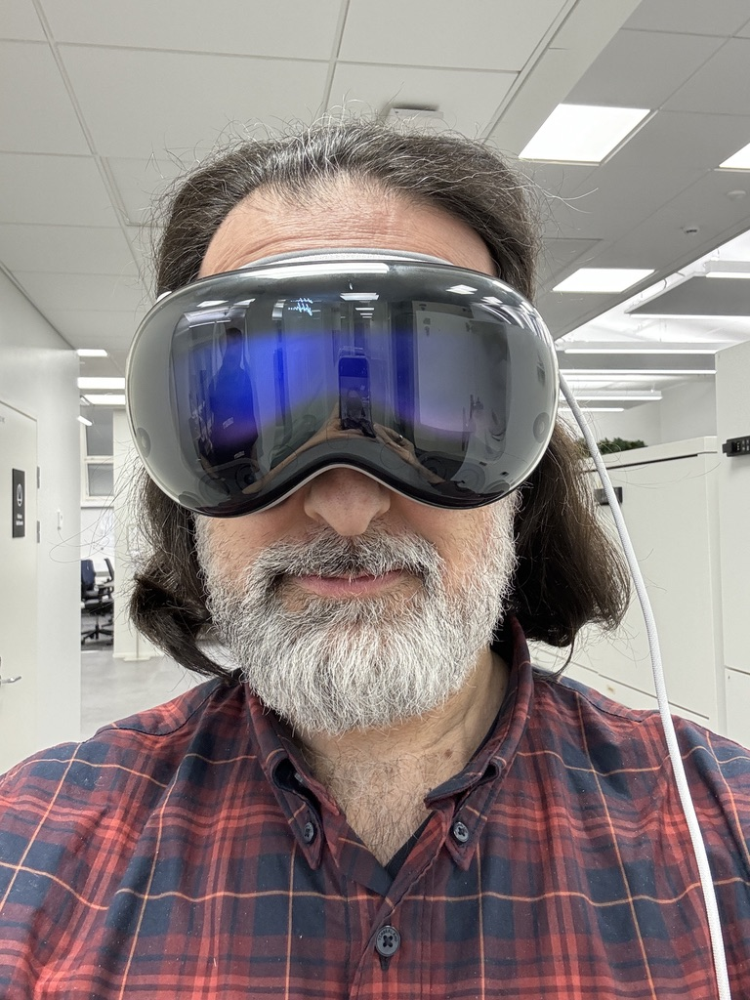

Mapbox Mobile Maps SDK, 2022-2024
Mapbox is a company that provides maps and navigation for mobile and web applications. The easiest way to describe it is that it’s an alternative to Google Maps. Maps were the original product (hence the name), but later the company expanded to search and navigation. One of the key selling points of Mapbox Maps is that they are heavily customisable using a web-based tool called Mapbox Studio.
The SDK is a library of UI components and APIs that let developers easily integrate Mapbox Maps in their mobile application.
Mapbox’s main competitors are Google Maps, HERE, Tomtom and a fork of Mapbox’s own open source version called MapLibre. For most of its existence Mapbox’s software was open source, but at some point the company decided to move to closed source and that’s when MapLibre was born.
What I did
From November 2022 to December 2024 I was the engineering manager for the Mapbox Mobile Maps SDK. I was responsible for a team of 12 engineers developing the top layer of the SDK, meaning the Swift and Kotlin libraries and later SwiftUI, Jetpack Compose and Flutter, for iOS and Android. The actual rendering engine was implemented by another team in C++ and our team’s job was to make it easy to use for mobile developers, which for Android includes Automotive HMI developers (nowadays cars are supposed to be phones on wheels after all).
During my time at Mapbox our team released a bunch of major features:
- The new default 3D Maps style, called Mapbox Standard
- The Mapbox Maps Flutter SDK
- Support for SwiftUI and Jetpack Compose
- Interactive map elements
- Support for Apple Vision Pro
What I learned
Working at Mapbox was a little bit like coming home: I was back in mobile development, and I was working with many of my former Nokia and Intel colleagues. I had the opportunity to catch up on mobile software and even spent some of my own time to learn modern iOS development.
I knew about Mapbox from my ex-colleagues and I considered it like a sort of mini Google: it had a reputation of having excellent engineers and engineering practices, and it paid well above the market. I found all this to be true when I joined, the engineering culture at Mapbox was indeed outstanding and I worked with some of the best engineers I’ve ever met. One highlight was the recruitment process, which was well organised and supported and was a major factor in keeping the quality of the hires high.
Many of Mapbox’s processes were lifted directly from Amazon, which is not surprising since the CEO is a former Amazon VP. During this time I discovered the book Working Backwards, about Amazon’s working culture, and I started referring to it as “Mapbox’s secret manual”. Not everything survived the translation: in particular the PR/FAQ process, where you should write the PR announcement and FAQ for a product before development starts, was only given lip service and mostly ignored, which was disappointing because I found it be one of the most powerful ideas in the book.
We did however write a lot of documents and read them silently during meetings, which was another practice I loved and tried to implement later in my next job. In some cases it went a bit too far, especially with the promotion and performance evaluation process that required writing a small dissertation for each of your direct reports (if you wanted to do them justice at least) and was exhausting for managers. One of my few disappointments with Mapbox was that after going through the calibration process and getting all my scores approved, weeks later I was told to drop one “exceeds expectations” for budget reasons, and worst of all to make the decision in less than one hour. I understand why this was necessary, but knowing in advance would have saved me a lot of work.
One of the highlights was procuring a Vision Pro for the team even before it was available in Europe. Unfortunately after completing the demo we had purchased it for, it sat mostly unused in a cabinet, which seems to be the common fate of the device.
If Mapbox was so great, why did I leave? To be honest I’m still asking myself that question. The people were great, the salary was great, I liked the product and was interested in the tech used by the team. The main reason I gave when I left was the frequent late evening calls with the US, and that was definitely a factor. There was one particular evening when I was attending meetings and messaging until 11pm to resolve a critical customer issue at the expense of my family time, and told myself I couldn’t do this anymore. But there were other things, all of which would have been surmountable but put me in the state of mind to take that one particular recruiter’s call that led me to my next gig. And when you take the call, you have usually made the decision already.